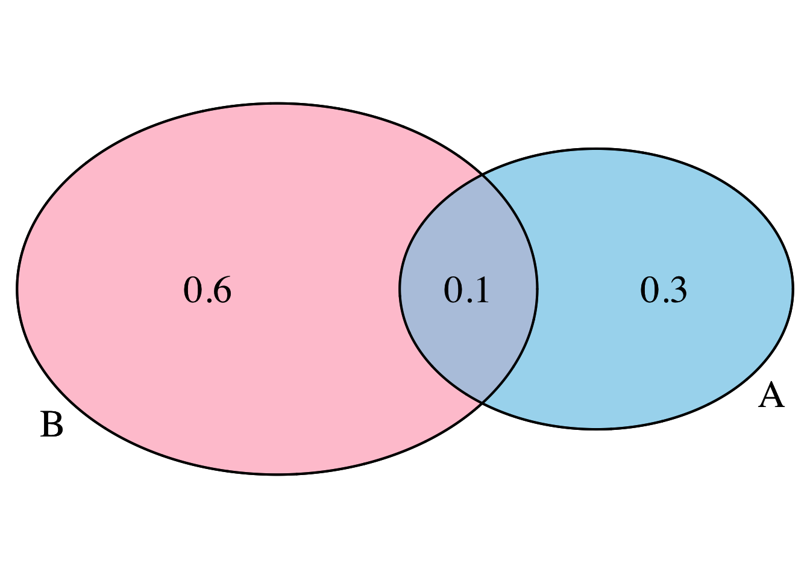
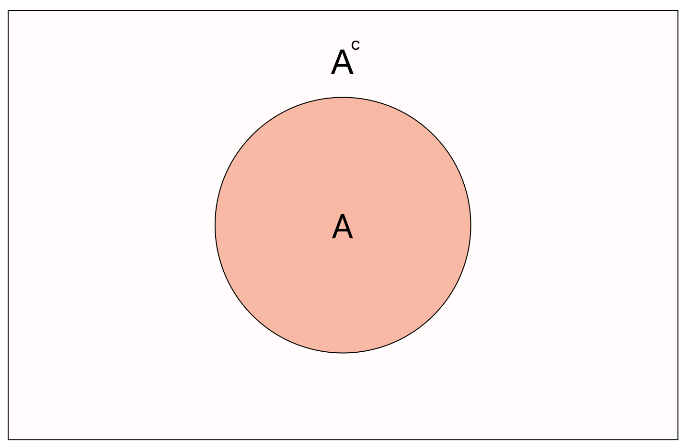

This post contains notes for Chapter 5 of my course series Data Science with R covering some fundamentals of probability theory. The material in this note is focussed on developing intuitive understanding for those who perhaps do not have a formal mathematical background. For a more rigorous measure theoretic definitions see my notes on Probability Theory.
Probability
Let us begin like all good courses on the fundamentals of probability by considering the simple experiment of flipping a fair coin. This is a random experiment with finite and discrete outcomes, i.e. the results of the experiment can be either heads or tails and do not know which in advance.
A collection of possible outcomes is known as an event, for example we define the event of the coin landing on heads by \(H\).
The probability of a discrete event \(H\) occuring is given by:
\[ \mathbb{P}(A) := \frac{\text{number of ways for }H\text{ to occur}}{\text{total number of possible outcomes}} \]
For our coin flipping example we have 2 possible outcomes and thus
\[ \mathbb{P}(H)=\mathbb{P}(T)=\frac{1}{2}. \]
A sample space is said to be discrete if it has finite (or more specifically countable) possible outcomes (e.g. coin flips, dice rolls). Otherwise, the sample space is said to be continuous (e.g. height of individuals measured, speed of birds).
Since the sample space contains all outcomes and it is certain that something will happen we have that \(\mathbb{P}(\Omega)=1\). Equivalently, the probability of nothing happening, denoted by the empty set \(\emptyset\), is \(\mathbb{P}(\emptyset)=0\). Finally, intuitively the probability of any event can never be negative, and can never be greater than 1, or written mathematically
\[ \forall A,~0\leq \mathbb{P}(A)\leq 1. \]
These fundamental properties are known as the probability axioms.
Probability Zero Events
We note that when we are considering random experiments with continuous sample spaces, a probability zero event is not the same as that event being impossible. This might seem like a crazy thing to say but lets develop our intuition with an example.
Consider the continuous interval \([0,1]\). Let us say that we have equal probability of choosing any real number (decimal of up to infinite length) in this interval. What is the probability that we select exactly \(0.5\)?
You would correctly say 0, we have uncountably infinite events and only one that we care about, hence this is a zero probability event.
However, you could have chosen 0.5. In fact, you are certain to choose some number and whatever number you choose also was a probability zero event!
Venn Diagrams
To visualize the probability of random experiments, and to gain an intuitive understanding of the underlying set theory notation, we can use Venn diagrams.
To consider a new and more interesting example, we turn to a fair 10-sided dice. The sample space is
\[ \Omega := \{1,2,3,4,5,6,7,8,9,10\}. \]
We then define the events:
- \(A\) - roll a number less than 5; and
- \(B\) - roll a number greater than 3,
with probabilities
\[ \mathbb{P}(A)=\frac{4}{10}=\frac{2}{5}\quad \& \quad \mathbb{P}(B)=\frac{7}{10}. \]
Probability Laws
Mutual Exclusivity
Consider two general events \(A\) and \(B\). We say that the events are mutually exclusive if they cannot happen at the same time, or written mathematically \[ \mathbb{P}(A\cap B) = 0. \]

Thus, if two events are not mutually exclusive, they overlap when drawn as a Venn diagram.

Addition Rule
The addition rule states that \[ \mathbb{P}(A\cup B)=\mathbb{P}(A) + \mathbb{P}(B) -\mathbb{P}(A\cap B), \]
i.e. the probabiity that event \(A\) or \(B\) occurs is equal to the sum of the probabilities that events \(A\) and \(B\) occur minus the probability that both events \(A\) and \(B\) occur.
Complementary Events
The complement \(A^c\) of an event \(A\) means all outcomes besides those contained in \(A\).

Thus we have the helpful result \[ \mathbb{P}(A^c)= 1-\mathbb{P}(A). \]
Conditional Events
Sometimes it is easier to think about the probability of an event \(A\) conditional on some other event \(B\). Formally written, the conditional probability of \(A\) occurring given that event \(B\) has occurred is \[ \mathbb{P}(A|B) = \frac{\mathbb{P}(A\cap B)}{\mathbb{P}(B)}. \]
Independent Events
Two events \(A\) and \(B\) are said to be independent if \[ \mathbb{P}(A|B)=\mathbb{P}(A). \]
Note that this also allows us to obtain the equivalent definition using the definition of conditional probability: \[ \mathbb{P}(A|B)=\frac{\mathbb{P}(A\cap B)}{\mathbb{P}(B)}=\mathbb{P}(A)\implies\mathbb{P}(A\cap B)=\mathbb{P}(A)\times\mathbb{P}(B). \]
Bayes Theorem
The fundamental result of Bayesian statistics is Bayes theorem which states that \[ \mathbb{P}(A|B)=\frac{\mathbb{P}(B|A)\mathbb{P}(A)}{\mathbb{P}(B)}. \]
Random Variables
Intuitively, a random variable \(X\) is a function that takes values in a support (some prespecified range of values) with some given probability. We often denote random variables with capital letter \(X\), \(Y\) or \(Z\).
If the support of a random variable is countable then the random variable is said to be discrete, otherwise it is said to be continuous.
Discrete Random Variables
Consider a discrete random variable \(X\) that has countable support. We define the probability mass function (PMF) \(p_X(x)\) of the random variable by \[ p_X(x)=\mathbb{P}(X=x), \]
i.e. the probability mass function gives the probabilities of the random variable taking certain values in its support. From the PMF we can define the cumulative distribution function as \[ F_X(x)=\mathbb{P}(X\leq x). \]
For example, let \(X\) be a random variable describing a fair 6-sided dice. Thus \(X\) has support \(\{1,2,3,4,5,6\}\) and its PMF can be summarised as \[ \mathbb{P}(X=x)=\frac{1}{6}~~\forall x\in\{1,2,3,4,5,6\}. \]
We say that \(X\) follows a discrete uniform distribution and this is one example of a discrete distribution family. The common discrete distributions we will explore include:
- Bernoulli Distribution;
- Binomial Distribution;
- Discrete Uniform Distribution;
- Poisson Distribution.
Discrete Expectation
The expectation of a random variable gives the average of all values generated by the random variable under repeated sampling. For a discrete random variable this is given by the weighted sum \[ \mathbb{E}[X] = \sum_{x}x\cdot\mathbb{P}(X=x). \]
Returning to our example, we can compute the expectation of the discrete unform random variable as \[ \begin{align} \mathbb{E}[X] & = \sum_{x=1}^6 x\cdot\mathbb{P}(X=x) \\ & = \frac{1}{6}\cdot (1+2+3+4+5+6) = 21/6 = 3.5. \end{align} \]
Continuous Random Variables
Now consider a continuous random variable \(X\) taking values in some continuous support. Notice now that it would be non-sensical to try to define a mass function as above since \(\mathbb{P}(X=x)=0\) for all \(x\). We instead must define a function \(f_X(x)\) known as the probability density function which gives the density of \(X\) across its support.
To improve our intuition about what a density function is, let us find the density function for a continuous random variable using probability laws. Let \(X\) be continuous and take values in the interval \([0,10]\) with equal probability. The density must be the same across all values of \(x\) and so we need can state that for some constant \(c\) \[ f(x)=c;~~\forall x. \]
Further the “sum” of the probabilities of all values must equal 1. Since we are “summing” over a continuous interval we instead use integration, i.e. we have that \[ \int_0^{10}f_X(x)dx = \int_0^{10}cdx = 1. \]
Some simple calculus gives us that \[ [cx]_{x=0}^{10}=10c=1\implies c=\frac{1}{10}. \]
Thus the density can be summarized as \[ f_X(x) = \frac{1}{10};~~\forall x\in [0,10]. \]
This is an example of a continuous uniform distribution. The standard continuous probability distributions we shall be considering include:
- Continuous Uniform Distribution;
- Exponential Distribution;
- Normal Distribution.
The cumulative distribution function is defined as \[ F_X(x) := \mathbb{P}(X\leq x) = \int_{0}^x f_X(x)dx. \]
Thus, in the continuous setting we can only compute the probability of intervals of the support.
Continuous Expectation
Similarly, the continuous expectation is intuitively just the infinite weighted sum (i.e. an integral) defined as \[ \mathbb{E}[X] := = \int_X x dF(x) = \int_X x\cdot f_X(x) dx. \]
For our example we can compute the expectation as \[ \mathbb{E}[X] = \int_{0}^{10} x\cdot \frac{1}{10} dx = \left[\frac{x^2}{20}\right]_{x=0}^{10} = \frac{100}{20} = 5. \]